CHƯƠNG III – ĐIỆN TRƯỜNG
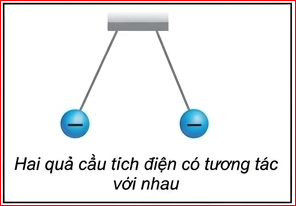
Hai quả cầu tích điện cùng dấu được treo bằng hai sợi dây mảnh không dẫn điện như hình bên. Tại sao chúng không tiếp xúc nhưng vẫn tương tác được với nhau?
Đặt điện tích \( q \) cách điện tích \( Q \) một khoảng \( r \) (Hình 17.1):
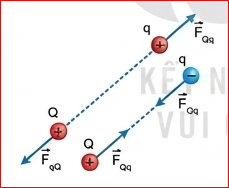
Hình 17.1. Tương tác giữa hai điện tích
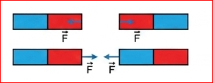
Hình 17.2. Tương tác giữa hai nam châm
1. Có phải không khí đã truyền tương tác điện từ điện tích Q tới điện tích q?
2. Vùng không gian bao quanh một nam châm có từ trường. Tương tự như vậy, vùng không gian bao quanh một điện tích có điện trường. Ta có thể phát hiện sự tồn tại của điện trường bằng cách nào?
Xung quanh nam châm có từ trường, từ trường sẽ truyền tương tác từ nam châm này tới nam châm khác (Hình 17.2). Tương tự như nam châm, xung quanh điện tích có một điện trường, điện trường sẽ truyền tương tác giữa các điện tích, đó là một trường lực.
* Trong bài này ta chỉ xét điện trường của các điện tích đứng yên.
Người ta sử dụng điện tích dương có điện tích nhỏ, được gọi là điện tích thử, để phát hiện lực điện tác dụng lên nó, qua đó nhận biết được độ mạnh yếu của điện trường tại điểm ta xét. Đại lượng đặc trưng cho độ mạnh yếu của điện trường được gọi là cường độ điện trường.
Theo công thức (16.2), độ lớn của lực điện \( F \) tỉ lệ với độ lớn của điện tích \( q \). Tỉ số \( \frac{F}{q} \) chính bằng độ lớn của lực điện tác dụng lên điện tích 1 C, do đó tỉ số này được lấy làm số đo cường độ điện trường tại điểm đặt điện tích thử \( q \).
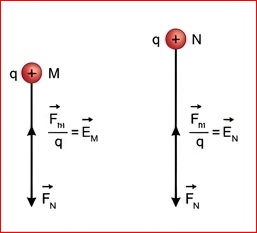
Hình 17.3. Điện trường tại N mạnh hơn điện trường tại M
Cường độ điện trường tại một điểm được đo bằng tỉ số giữa lực điện tác dụng lên một điện tích dương đặt tại điểm đó và độ lớn của điện tích đó.
Trong hệ SI, đơn vị của cường độ điện trường là vôn trên mét (\( V/m \)).
Vì lực là đại lượng vectơ, \( q \) là đại lượng vô hướng nên cường độ điện trường \( E \) là đại lượng vectơ. Vectơ cường độ điện trường \( \vec{E} \) tại một điểm được xác định bằng tỉ số giữa vectơ lực điện \( \vec{F} \) tác dụng lên một điện tích \( q \) đặt tại điểm đó và trị số của điện tích đó:
Hãy chứng tỏ rằng vectơ cường độ điện trường \( \vec{E} \) có:
Từ công thức (16.2), ta xác định được độ lớn cường độ điện trường do một điện tích điểm \( Q \) đặt trong chân không hoặc trong không khí gây ra tại một điểm cách nó một khoảng \( r \) có giá trị bằng:
(Hoặc dùng hằng số \( k \): \( E = k \frac{|Q|}{r^2} \) với \( k = 9 \cdot 10^9 \text{ Nm}^2/\text{C}^2 \)).
Xét điện trường của điện tích \( Q = 6.10^{-14}C \). Sử dụng đoạn thẳng dài 1cm để biểu diễn cho độ lớn vectơ cường độ điện trường \( E = \frac{10^{-10}}{6\pi\epsilon_{0}} (V/m) \).
Hãy tính và vẽ vectơ cường độ điện trường tại một điểm cách Q một khoảng 2 cm và 3 cm.
1. Hãy chứng tỏ rằng: Độ lớn cường độ điện trường tại một điểm trong công thức (17.1) bằng độ lớn của lực điện tác dụng lên một đơn vị điện tích đặt tại điểm đó.
2. Một điện tích điểm \( Q = 6.10^{-13} \text{ C} \) đặt trong chân không.
Trong cơn dông, thường xuất hiện những đám mây tích điện do các hạt nước trong đó nhiễm điện, chúng tạo ra những vùng điện trường mạnh quanh các đám mây này. Khi các đám mây tích điện trái dấu tới gần nhau có thể xảy ra hiện tượng phóng điện mà ta gọi là sét.
Nếu trong không gian có hai điện tích điểm dương \( Q_1 = Q_2 \) được đặt ở hai điểm B và C, một điện tích thử \( q \) được đặt tại một điểm A như Hình 17.4.
Muốn tính vectơ cường độ điện trường của hệ điện tích tại điểm A bất kì ta cũng có vectơ cường độ điện trường \( \vec{E_1} = \frac{\vec{F_1}}{q} \) do \( Q_1 \) gây ra tại điểm A, vectơ cường độ điện trường \( \vec{E_2} = \frac{\vec{F_2}}{q} \) do \( Q_2 \) gây ra tại điểm A. Theo quy tắc tổng hợp vectơ ta sẽ có vectơ cường độ điện trường tổng hợp của hệ điện tích gây ra tại điểm A. Vectơ cường độ điện trường tổng hợp chính bằng thương số của vectơ lực điện tổng hợp chia cho trị số của điện tích q:
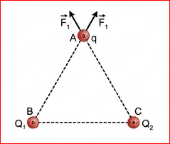
Hình 17.4. Lực điện tác dụng lên điện tích thử q tại điểm A
Như vậy, cường độ điện trường của hệ điện tích điểm được tổng hợp từ cường độ điện trường theo công thức của mỗi điện tích điểm:
1. Đặt điện tích điểm \( Q_1 = 6.10^{-8} \text{ C} \) tại điểm A và điện tích điểm \( Q_2 = -2.10^{-8} \text{ C} \) tại điểm B cách A một khoảng bằng 3 cm (Hình 17.5). Hãy xác định những điểm mà cường độ điện trường tại đó bằng 0.
2. Cho tam giác ABC vuông tại A có \( AB = 3 \text{ cm} \) và \( AC = 4 \text{ cm} \). Tại điểm B ta đặt điện tích \( Q_1 = 4,5.10^{-8} \text{ C} \), tại điểm C ta đặt điện tích \( Q_2 = 2.10^{-8} \text{ C} \).
Trong thực tế, một quả cầu có điện tích phân bố đều trong toàn bộ thể tích hoặc phân bố đều trên mặt cầu thì điện trường bên ngoài quả cầu tương đương với điện trường của một điện tích điểm đặt tại tâm cầu và có điện tích bằng với điện tích của quả cầu. Ta thấy công thức \( E = \frac{|Q|}{4\pi\epsilon_0 r^2} \) vẫn được vận dụng để tìm cường độ điện trường trong trường hợp này. Do đó trong các thí nghiệm đơn giản về điện trường người ta thường sử dụng các quả cầu tích điện để thuận tiện trong đo đạc, nghiên cứu và tính toán.
Thực nghiệm cho thấy, ngay sát bề mặt của Trái Đất luôn có một điện trường có phương thẳng đứng, hướng từ trên xuống dưới và cường độ vào khoảng từ \( 100 \text{ V/m} \) đến \( 200 \text{ V/m} \).
Các hạt bụi mịn lơ lửng trong không khí được phân loại dựa vào kích thước của chúng như pm1, pm2.5, pm10,... con số đứng sau chữ pm chỉ đường kính tối đa của hạt bụi tính theo đơn vị \( \mu\text{m} \). Ví dụ pm2.5 là hạt bụi mịn có đường kính tối đa bằng \( 2,5 \mu\text{m} \). Những hạt bụi mịn này thường tích điện dương nên không thể bay lên cao và phân tán đi xa được và là nguyên nhân chính gây ô nhiễm môi trường ở các thành phố lớn.
Một hạt bụi mịn loại pm2,5 có điện tích bằng \( 1,6.10^{-19} \text{ C} \) lơ lửng trong không khí nơi có điện trường của Trái Đất bằng \( 120 \text{ V/m} \). Bỏ qua trọng lực, tính lực điện của Trái Đất tác dụng lên hạt bụi mịn và từ đó giải thích lí do hạt bụi loại này thường lơ lửng trong không khí.
Để quan sát điện trường của hệ hai điện tích, người ta thực hiện thí nghiệm như sau: Cho vào bể chứa dầu một ít hạt cách điện mịn (mạt cưa chẳng hạn) rồi khuấy đều để các hạt lơ lửng trong dầu. Đặt một hoặc hai quả cầu kim loại tích điện trong bể chứa dầu đó, ta thấy các hạt cách điện sẽ nằm dọc theo các đường nhất định (Hình 17.6). Hình ảnh các đường như trên gọi là điện phổ.
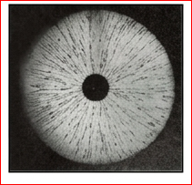
a) Điện phổ của một điện tích
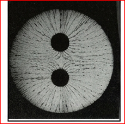
b) Điện phổ của hai điện tích cùng dấu
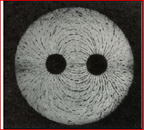
c) Điện phổ của hai điện tích trái dấu
1. Em hãy quan sát Hình 17.6 và đưa ra nhận xét về đặc điểm của điện phổ:
2. Từ quan sát Hình 17.7 và các nhận xét trên, em hãy vẽ các đường sức điện của một điện tích âm, các đường sức điện của hai điện tích âm \( Q_1 = Q_2 < 0 \) đặt gần nhau.
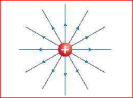
a) Các đường sức điện của một điện tích dương
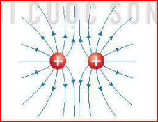
b) Hệ các đường sức điện của hai điện tích dương
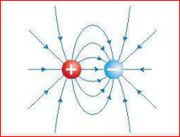
c) Hệ các đường sức điện của hai điện tích trái dấu
■ Điện trường được tạo ra bởi điện tích, là dạng vật chất tồn tại quanh điện tích và truyền tương tác giữa các điện tích.
■ Vectơ cường độ điện trường \( \vec{E} \) tại một điểm được xác định bằng tỉ số giữa vectơ lực điện \( \vec{F} \) tác dụng lên một điện tích \( q \) đặt tại điểm đó và giá trị của điện tích đó: \( \vec{E} = \frac{\vec{F}}{q} \)
■ Độ lớn của cường độ điện trường do một điện tích điểm \( Q \) đặt trong chân không hoặc trong không khí gây ra tại một điểm cách nó một khoảng \( r \) có giá trị bằng: \( E = \frac{|Q|}{4\pi\epsilon_{0}r^{2}} \)
■ Khi cho một hoặc một số quả cầu tích điện vào trong một bể dầu đã trộn đều các hạt cách điện. Hệ các đường được tạo thành từ các hạt cách điện được gọi là điện phổ của điện tích hoặc hệ điện tích nói trên.
■ Công thức tính độ lớn cường độ điện trường của một điện tích điểm được vận dụng để tính cường độ điện trường của một hệ điện tích điểm hay tính cường độ điện trường của vật hình cầu tích điện đều.
■ Đường sức điện xuất phát ở điện tích dương và kết thúc ở điện tích âm.
Bài 1: Một điện tích điểm \( q = 5.10^{-9} \text{ C} \) đặt trong chân không. Tính cường độ điện trường tại một điểm M cách \( q \) một khoảng 10 cm.
Bài 2: Tại một điểm có cường độ điện trường \( E = 4000 \text{ V/m} \). Đặt vào điểm đó một điện tích \( q = -2 \mu\text{C} \). Tính độ lớn lực điện tác dụng lên điện tích và so sánh hướng của lực điện với hướng của điện trường.
Bài 3: Hai điện tích \( q_1 = 8.10^{-8} \text{ C} \) và \( q_2 = -8.10^{-8} \text{ C} \) đặt tại A và B trong không khí (\( AB = 4 \text{ cm} \)). Tìm cường độ điện trường tổng hợp tại trung điểm M của AB.